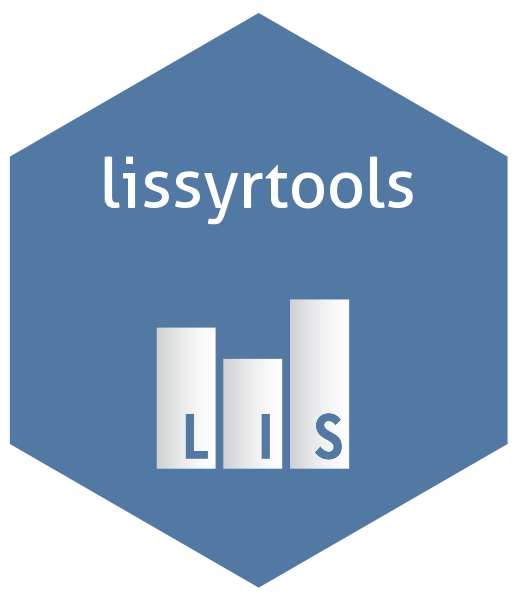
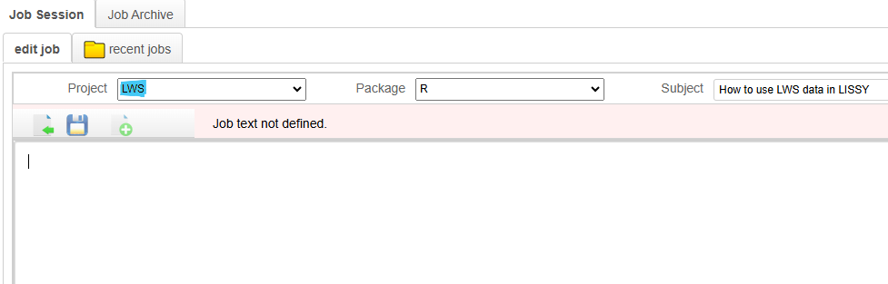

lissyrtools 
Overview
A package with the tools needed to develop scripts with LIS data
It allows users to:
* Read LIS data within the LISSY environment, or to use LIS sample files locally.
* Carry out commonly performed data cleaning tasks.
* Compute estimates from microdata.
Installation
The package is already installed in LISSY by the LIS Data Center team.
You can install the package locally to work with the LIS Sample Datasets from this GitHub repo with:
devtools::install_github("https://github.com/LIS-Cross-National-Data-Center/lissyrtools")Usage
lissyrtools provides its users with a set of functions and embedded objects designed to help users access and manipulate data in LIS’s remote execution system: LISSY. By providing built-in sample datasets in lissyrtools, we also encourage users to develop their LISSY scripts locally, where debugging and writing R code are more efficient in IDEs like RStudio.
Data first needs to be loaded using the lissyuse() function. Its output will be a list whose elements are the datasets available in the LIS database for the countries selected within the specified time frame. LWS data can be loaded by setting the `lws` argument to TRUE (e.g lws = TRUE), with the Project dropdown adjusted to “LWS” as shown in the image below:

Subsequently, the list can be transformed using other functions from lissyrtools in a pipeline structure, enabling users to generate aggregated figures for the entire dataset or specific subgroups.
LISSY version
library(lissyrtools)
library(dplyr)
# Load the datasets
# The output is a list whose elements are the datasets available in the LIS database for the countries selected within the specified time frame.
lis_datasets <- lissyuse(
data = "ca",
vars = c("dhi", "pi11", "age"),
from = 2014,
to = 2019
)
# Example of further data cleaning using `transform_` functions:
lissy_datasets_transformed <- lis_datasets %>%
transform_false_zeros_to_na("pi11") %>%
transform_negative_values_to_zero("pi11") %>%
transform_zeros_to_na("pi11") %>%
transform_top_code_with_iqr("pi11") %>%
transform_bottom_code_with_iqr("pi11") %>%
transform_adjust_by_lisppp("pi11") %>%
transform_restrict_age("pi11", from = 16, to = 64)
lissy_datasets_transformed <- lissy_datasets_transformed %>%
transform_false_zeros_to_na("dhi") %>%
transform_negative_values_to_zero("dhi") %>%
transform_top_code_with_iqr("dhi") %>%
transform_bottom_code_with_iqr("dhi") %>%
transform_equivalise("dhi") %>%
transform_adjust_by_lisppp("dhi")
# Compute indicators
print_indicator(lissy_datasets_transformed,
variable = "dhi",
indicator = "gini",
na.rm = TRUE)
print_indicator(lissy_datasets_transformed,
variable = "pi11",
indicator = "gini",
na.rm = TRUE)
# To load LWS datasets, set the argument `lws` == TRUE:
lws_datasets <- lissyuse(
data = c("us", "uk17", "uk19"),
vars = "dnw",
from = 2015,
to = 2021,
lws = TRUE
)
names(lws_datasets)Local version
When working with lissyrtools locally, use lissyuse(), along with the sample files made available in the package. We equipped this package with 3 sample files (1 for h-level and 1 for p-level) for LIS, and 2 sample files foe LWS:
italy_14_lis_h;italy_14_lis_p;italy_14_lws_handitaly_14_lws_p;united_states_16_lis_h;united_states_16_lis_p;united_states_16_lws_handunited_states_16_lws_h;mexico_18_lis_handmexico_18_lis_p.
library(lissyrtools)
library(dplyr)
# Example where both household-level and individual-level variables are specified in `vars`
lis_datasets <- lissyuse(data = c("it", "us", "mx"), vars = c("region_c", "dhi", "age", "pi11", "sex"))
names(lis_datasets)
# Example where only household-level are specified in `vars`
lis_datasets <- lissyuse(data = c("it", "us", "mx"), vars = c("region_c", "dhi"))
names(lis_datasets)
User Support
If you encounter any bugs, typos, or experience any issue while running jobs including this packages’ tools, please email us at: usersupport@lisdatacenter.org.
For more information about LIS, visit our website, explore METIS for metadata, and check out our best practices for job submission in LISSY.
Recommended checks on other packages that offer tools for data manipulation and list handling: magrittr, dplyr and purrr